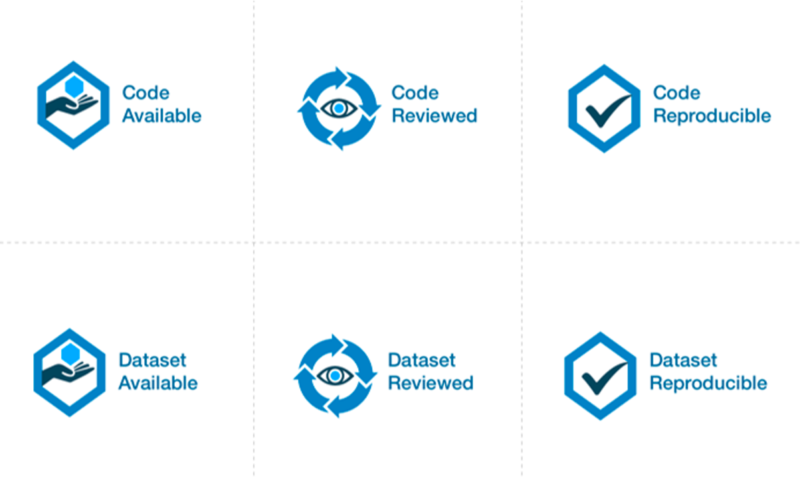

DSN supports open science, where authors of accepted papers are encouraged to make their tools and datasets publicly available to ensure reproducibility and replicability by other researchers. New this year, DSN 2024 will offer a separate artifact evaluation track to all accepted papers from all three categories of the research track. The goals of the artifact track are to (1) increase confidence in a paper’s claims and results, and (2) facilitate future research via publicly available datasets and tools.
The availability of artifacts accompanying the papers will be denoted by badges. Badges will appear on the page of the paper on the digital library. Since DSN is an IEEE-sponsored conference, it follows the scheme of the IEEE Xplore digital library (see https://ieeexplore.ieee.org/Xplorehelp/overview-of-ieee-xplore/about-content#reproducibility-badges). Accordingly, DSN will award the following three types of badges:
The “Reviewed” badge implies that the artifact also qualifies for the “Available” badge. The “Reproducible” badge subsumes both the “Reviewed” and “Available” badges. Authors can apply for all of the three types (i.e., the artifact is Available, Reviewed, and Reproducible).
Artifacts can be Code or Datasets. The same research paper can be accompanied by both Code and Datasets.
IEEE Xplore also allows a fourth type of badge (“Replicated”). This fourth badge is only for replication studies performed by other authors, and will not be awarded as part of this artifact evaluation process.
At the time of the submission, authors must indicate (1) whether they intend to submit an artifact for their submission, (2) the type of artifact (code, dataset, or both), (3) a DOI reserved for the artifact on an open-access repository (Zenodo or Figshare), and (4) the badge(s) they are applying for.
Please note that we require that the artifact should be submitted either through Zenodo (https://zenodo.org/) or Figshare (https://figshare.com/). They are two very popular open-access repositories adopted by computer science conferences, which assure long-term archival storage.
These repositories can provide a DOI, i.e., a fixed, persistent identifier for the artifact, that provides a more stable link than directly using an URL. Please note that the DOI of the artifact should be indicated at the time of paper submission for the research track, even if the artifact is not yet ready. Both Zenodo and Figshare allow users to reserve a DOI, and to upload the actual artifact at a later moment. The DOI will become reachable when the artifact is published. For more information about how to reserve a DOI, please see the following tutorials:
Please note that artifacts should not be submitted through GitHub or other software development platforms. Of course, you are free to also share a copy of your artifact through these platforms, but we require that the artifact is submitted and shared through Zenodo or Figshare for long-term archival storage and better interoperability.
We reiterate that the artifact does not need to be submitted at the same time as the paper. The artifact can be uploaded at the reserved DOI after the paper submission deadline, and can be updated until the artifact submission deadline. Information about the artifact submission and its review will not be shared with the PC of the research track.
The deadline for finalizing artifacts will be at the end of January 2024 (see the important dates below). By that date, the authors should submit a dedicated form to inform us that the artifact has been actually submitted. More information will be published here.
The artifacts will be evaluated by a dedicated Artifacts Evaluation (AE) committee through a single-blind review process, where authors should be available to respond quickly during the artifact evaluation.
The artifact evaluation process is restricted to accepted papers in the research track of DSN (including PER and Tool papers). The evaluation will begin after the review process is complete and acceptance decisions have been made by the research track PC. The research PC chairs will make the submitted paper available to the Artifact Evaluation committee. The information about the artifact evaluation is NOT shared with the research PC in any form.
Evaluation starts with a “kick-the-tires” period, during which evaluators ensure they can access their assigned artifacts and perform basic operations such as building and running a minimal working example. Artifact evaluations include feedback about the artifact, giving authors the option to address any significant blocking issues for AE work using this feedback. After the kick-the-tires stage ends, communication can only address interpretation concerns for the produced results or minor syntactic issues in the submitted materials.
We recommend authors to present and document artifacts in a way that the evaluation committee can use it and complete the evaluation successfully with minimal (and ideally no) interaction. To ensure that your instructions are complete, we suggest that you run through them on a fresh setup prior to submission, following exactly the instructions you have provided.
We expect that most evaluations can be done on any moderately-recent desktop or laptop computer. In other cases and to the extent possible, authors have to arrange their artifacts so as to run in community research testbeds or will provide remote access to their systems (e.g., via SSH) with proper anonymization. If the artifact is aimed at full reproducibility of results, but they take a long time to obtain (e.g., because of a large number of experiments, such as in fault injection), authors should provide a shortcut or sampling mechanism.
All artifacts submitted will compete for a “Distinguished Artifact Award” that is sponsored by KAUST (https://www.kaust.edu.sa/), to be decided by the committee. This will be awarded to the artifact that (1) has the highest degree of reproducibility as well as ease of use and documentation, (2) allows other researchers to easily build upon the artifact’s functionality for their own research, and (3) substantially supports the claims of the paper. We anticipate that at most one artifact (paper) would get the award, though the committee reserves the right not to award any artifact in a given year if none of them meet the criteria for the award.
In the following list, the important dates for the Artifact Evaluation (AE) are reported. Exact dates are TBC. The list also includes important dates for the research track of DSN.
We welcome (self-)nominations to join the Artifact Evaluation Committee. If you are interested, please fill out the form at: https://forms.gle/JRi1qvyiaHKxNHJN9
AEC members will contribute to the conference by reviewing companion artifacts of papers accepted in the research track. We invite early-career researchers to join the AEC, including PhD students (e.g., in the second or third year of their studies), who are working in any topic area covered by DSN, see the Research Track Call for Contributions. Participating in the AEC will allow you to familiarize yourself with research papers accepted for publication at DSN 2024, and to support experimental reproducibility and open-science practices.
For a given `ifact, you will be asked to evaluate its public availability, functionality, and/or ability to reproduce the results from the paper. You will be able to discuss with other AEC members and anonymously interact with the authors as necessary, for instance if you are unable to get the artifact to work as expected. Finally, you will provide a review for the artifact to give constructive feedback to its authors, discuss the artifact with fellow reviewers, and help award the paper artifact evaluation badges. You can be located anywhere in the world as all committee discussions will happen online.
We expect that each member will evaluate 1-2 artifacts, and that each evaluation will take around 10–20 hours. AEC members are expected to allocate time to bid for artifacts they want to review, to read the respective papers, to evaluate and review the corresponding artifacts, and to be available for online discussion (if needed). Please ensure that you have sufficient time and availability (see also the indicative important dates). Please also ensure you will be able to carry out the evaluation confidentially and independently, without sharing artifacts or related information with others and limiting all the discussions to within the AEC.
We are grateful to the Artifact Evaluation Committees of previous conferences in Systems Research (https://sysartifacts.github.io/) and Security Research (https://secartifacts.github.io/) for kindly sharing their previous experience with the evaluation process.
For more information or any issue, please contact the Artifact Evaluation Chairs.